Click a highlighted definition to read it here without losing your place. Follow section numbers alongside the original PDF.
Find lecture practice in this chapter (1)
Expand a practice panel for its example, Mermaid flow, and self-check.
Chapter cheat sheet
Main idea, definitions, and solving steps
The main idea: Understand computation through function abstraction, application, and capture-avoiding substitution.
| Key term | Concise meaning |
|---|---|
| Abstraction λx.e | A function binding parameter x in body e. |
| Application e1 e2 | Applies one expression to another; application groups to the left. |
| Alpha conversion | Renames bound variables consistently without changing meaning. |
| Beta reduction | Replaces a function’s bound parameter with its argument, avoiding capture. |
| Normal form | An expression with no remaining beta redex; some expressions have none. |
| Church encoding | Represents data and operations using functions alone. |
Rule to remember: (λx.e) a → e[x := a], with bound-variable renaming when needed to avoid capturing free variables.
Small example: (λx.λy.x) y reduces to λz.y after renaming the inner binder; λy.y would wrongly capture the free y.
How to solve problems:
- Identify binders and free occurrences.
- Choose the reduction strategy and locate its next redex.
- Rename conflicting binders, then substitute only free occurrences.
- For encodings, verify representation limits and distinguish normal form from a step-budget stop.
Common trap: The textbook’s Church numerals represent naturals. A normal-order evaluator and a call-by-value evaluator need not terminate on the same terms.
Read the chapter in the original PDF · Continue to the detailed sections
Syntax and code companion
Use the syntax reference to trace a symbol to its meaning and source.
Lambda binding and beta reduction · Grammar and AST constructors · Patterns and recursive cases
Line-by-line code · Terms and free variables
Complete OCaml teaching example
type term = Var of string | Lam of string * term | App of term * termThe constructors are variable, abstraction, and application.
let rec free x = functionAsk whether x occurs free.
| Var y -> x = yCheck this variable occurrence.
| Lam (y, body) -> x <> y && free x bodyA binder for x blocks the search.
| App (left, right) -> free x left || free x rightA free occurrence in either subterm is enough.
Trace result: y is free in λx.y. Capture-avoiding substitution uses this kind of test before moving a term under a binder.
Before you begin
Read in the PDF: Chapter 9, pp. 277–292. Goal: represent computation using only names, functions, and application. Definitions: lambda calculus, beta reduction, capture-avoiding substitution.
9.1 Lambda Calculus
A lambda term is a variable, an abstraction λx.body, or an application f arg. Application associates to the left: a b c means (a b) c. An abstraction's body extends rightward as far as its enclosing parentheses allow. Establish the tree before attempting reduction.
Beta reduction replaces (λx.body) arg by the body with free occurrences of x replaced by arg. The key word is free. A nested abstraction binding x shields its own occurrences. A nested binder sharing a name with a free variable of arg must be renamed before substitution to avoid capture.

View Mermaid source
flowchart TD
accTitle: Chapter 9 - substitute without changing which binder owns a name
accDescr: Stop at a matching binder, rename a conflicting binder, and otherwise recurse structurally.
A["Substitute x by argument inside a term"] --> B{"Outer constructor"}
B -->|Variable| C["Replace only if its name is x"]
B -->|Application| D["Substitute in both children"]
B -->|Lambda y| E{"y equals x?"}
E -->|Yes| F["Stop: x is shadowed here"]
E -->|No| G{"y free in argument, and x free in body?"}
G -->|Yes| H["Rename y to a fresh name; recurse"]
G -->|No| I["Keep binder; recurse in body"]
Worked substitution: (λx. λy. x y) y cannot become λy. y y, because that would bind the argument's formerly free y. Rename the inner y to z first. The result is λz. y z. In contrast, (λx. λx. x) y reduces to λx. x; the inner binder prevents replacement.
Normal order and normal form
Normal order repeatedly contracts the leftmost outermost redex, including redexes inside abstractions when seeking a full normal form. A weak evaluator that stops as soon as it sees a lambda is not the requested normalizer.
Let Ω be (λx. x x) (λx. x x). In (λunused. answer) Ω, normal order contracts the outer call and returns answer without reducing Ω. Eager evaluation would try Ω first and diverge. Normal order reaches a normal form when one exists, but some terms have none; no reducer can promise termination for every input.
Step by step · Separate renaming, substitution, and evaluation order
Source: PDF pp. 279–285.
| Operation | Meaning | Example |
|---|---|---|
| Alpha-renaming | Change a bound name and exactly its bound occurrences to a fresh name | λx.x and λz.z represent the same binding structure |
| Capture-avoiding substitution | Replace free occurrences while preserving binding | Substitute y for x in λy.x y only after renaming the inner y |
| Beta-reduction | Contract a call whose function is a lambda | (λx.body) arg → body[x:=arg] |
| Normal order | Choose the leftmost outermost redex at every step | Avoid evaluating an unused divergent argument |
For (λx. λy. x y) y:
- The argument y is free; it must remain free after substitution.
- Rename the inner binder y to a fresh z, obtaining
(λx. λz. x z) y. - Substitute the argument for the free x in the body, giving
λz. y z. - Stop:
y zis not a beta-redex because its function is a variable, not a lambda.
This result is a normal form even though it contains an application. Conversely, λz. (λw.w) z is a lambda but still contains a redex; full normalization proceeds to λz.z.
Choose a reduction strategy before encoding recursion Lecture 20
- Normal order reduces leftmost outermost redexes and may reduce under lambdas; call by name does not reduce under lambdas.
- Church encodings represent booleans and natural numbers as functions; fixed points express recursion, with evaluation-strategy caveats.
Source slides: p. 6 · p. 8 · p. 12 · p. 13 · p. 14 · p. 16 · p. 17 · p. 18 · p. 19 · p. 20 · p. 22 · p. 29
Practice with Lecture 20 · example, thinking flow, and self-check
Rule in context: (λx.e) a →β e[x:=a], using capture-avoiding substitution
Lambda binding and beta reduction · Type substitution versus term substitution · Functions and application
Worked example: (λx.λy.x) y must become λz.y after renaming the inner y. The incorrect λy.y captures the formerly free argument variable.
Thinking steps:
- Find free and bound occurrences.
- Choose a redex under the chosen strategy.
- Rename binders if capture is possible.
- Substitute only free occurrences.
- Repeat or identify a normal form.

View Mermaid source
%%{init: {"flowchart": {"wrappingWidth": 600}}}%%
flowchart TD
accTitle: Lecture 20 reasoning route
accDescr: Numbered stages for applying lambda calculus.
N0["1. Find free and bound occurrences"]
N1["2. Choose a redex under the chosen strategy"]
N0 --> N1
N2["3. Rename binders if capture is possible"]
N1 --> N2
N3["4. Substitute only free occurrences"]
N2 --> N3
N4["5. Repeat or identify a normal form"]
N3 --> N4
Homework connection: HW2's fixed-point discussion and textbook Chapter 9 encoding tasks; this is not OCaml surface syntax.
HW2 thinking guide · Full homework map
Try it: Does the usual Y combinator directly terminate under eager call by value?
Reveal the explanation
No. Its self-application unfolds eagerly; use a strategy-appropriate delayed fixed-point construction.
9.2 Converting to a Lambda Expression
Church booleans choose between two arguments: true selects the first and false selects the second. A Church numeral n applies its first argument n times to its second. Thus three is λs. λz. s (s (s z)). The data's meaning is its behavior when supplied suitable arguments.
| Source form | Translation idea |
|---|---|
| Nonnegative n | Apply s n times to z, inside two lambdas |
| Variable or procedure | Preserve the name or introduce the corresponding lambda |
| Call | Translate both children and apply |
| Addition | Compose the two numerals' iterations |
| Multiplication | Iterate one numeral's repeated application using the other |
| Zero test | Iterate a constant-false function starting at true |
| Conditional | Apply the translated boolean to the two translated branches |
| Let | Apply a lambda for the body to the translated definition |
| Letrec | Use Y on a functional that receives its recursive self |

View Mermaid source
flowchart TD
accTitle: Chapter 9 - translate and normalize a source expression
accDescr: Each source constructor chooses an encoding; recursive translation builds a lambda term, which normal-order reduction simplifies.
A["Inspect source AST constructor"] --> B["Translate child expressions"]
B --> C["Wrap them in the matching closed encoding"]
C --> D["Obtain a lambda term"]
D --> E["Contract leftmost outermost redex repeatedly"]
E --> F["Decode the resulting numeral or other value"]
For 1 + 2, the normalized term applies s three times to z. For recursion, write a functional F that accepts the would-be recursive function. The Y combinator yields a term behaving as F applied to its own fixed point. Under normal order, a conditional can reach the recursion's base case without first expanding every recursive branch.
Two boundaries in the source: p. 287 explicitly restricts the displayed number encoding to naturals and omits signed integers. Also, translating by these equations and using normal order does not preserve the termination behavior of a call-by-value source program in every case. The unused-Ω example shows why. Treat this as the book's normal-order encoding exercise, not a proof of full call-by-value compiler correctness.
Step by step · Decode Church data through what it does
Source: PDF pp. 286–290. The names below abbreviate closed lambda terms. They are explanatory names, not extra primitive constructors.
| Name | Encoding | Behavioral meaning |
|---|---|---|
| TRUE | λt.λf.t |
Select the first argument |
| FALSE | λt.λf.f |
Select the second argument |
| ZERO | λs.λz.z |
Apply s zero times |
| TWO | λs.λz.s (s z) |
Apply s twice |
| ADD | λn.λm.λs.λz.m s (n s z) |
Do n applications, then m more |
| ISZERO | λn.n (λignored.FALSE) TRUE |
Zero keeps TRUE; any positive number changes it to FALSE |
Boolean selection, one contraction at a time:
TRUE a bmeans((λt.λf.t) a) bbecause calls associate leftward.- Substitute a for t:
(λf.a) b(choose fresh binder names if a contains free f). - The body does not use f, so the result is a. The unselected b need not be reduced under normal order.
Addition, with the numeral applications made visible:
- Apply ADD to ONE and TWO:
λs.λz.TWO s (ONE s z). - Expand
ONE s ztos z. - TWO applies s twice to that starting expression:
s (s (s z)). - The complete result is
λs.λz.s (s (s z)), the encoding of THREE.
These are equational simplifications to expose the meaning; a strict normal-order reducer may contract a different intermediate redex first and reach the same normal form. The count of s applications explains the answer without pretending that a Church numeral is a host integer.

View Mermaid source
flowchart LR
accTitle: Chapter 9 - Church addition composes repetitions
accDescr: One application of s transforms z into s z, then two further applications produce the encoding of three.
Z["1. Start: z"] --> O["2. ONE s z: s z"]
O --> T["3. TWO s uses that as its start: s (s (s z))"]
T --> R["4. Abstract s and z: THREE"]
9.3 Implementation
Read in the PDF: pp. 291–292. Download the complete reducer and translators. Run ocaml textbook_lambda.ml.
Task 1 — reduce
Implement free-variable collection and capture-avoiding substitution first. Then implement step, which returns one reduced term or reports that no redex exists:
- An application whose function is already a lambda contracts immediately; do not reduce its argument first.
- Otherwise search the function child, then the argument child.
- Inside a lambda, search its body.
- A variable has no reduction step.
Repeat step until it reports none. The file provides the exact reduce : lambda -> lambda interface and a separate reduce_bounded utility for demonstrations that might diverge. A step-limit result means “not finished within this budget,” not “proved divergent.”
Task 2 — translate
The translate function handles every source constructor using the natural-number convention, including predecessor-based subtraction and multiplication. Natural subtraction is truncated at zero, so 1 − 3 becomes 0 in this convention; negative constants are rejected. Addition, variables, procedures, calls, zero tests, conditionals, let, and recursive let follow the book's encodings. Built-in encodings are closed terms, preventing accidental capture of source variables when they are inserted.
The optional translate_signed extension handles negative integers and ordinary subtraction by encoding an integer as a pair (positivePart, negativePart) representing their difference. For pairs (a,b) and (c,d):
addition = (a+c, b+d)
subtraction = (a+d, b+c)
multiplication = (ac+bd, ad+bc)
zero test = a and b represent the same natural number
This extension changes the number representation, so use decode_signed, not the ordinary Church-numeral decoder. It intentionally rejects OCaml's min_int constant because its positive magnitude cannot be represented by the host integer used to build numerals. Large encodings can consume substantial time and memory.
View Mermaid source
flowchart TD
accTitle: Chapter 9 - choose and test the intended numeric representation
accDescr: The book example uses Church naturals; signed subtraction requires a different representation and decoder.
A["What numeric semantics do you need?"] --> B{"Nonnegative Church numbers or signed integers?"}
B -->|Book's displayed encoding| C["translate; subtraction stops at zero"]
B -->|Signed extension| D["translate_signed; pair represents positive minus negative"]
C --> E["Normalize; decode Church numeral"]
D --> F["Normalize pair projections; subtract decoded parts"]
Checks included: capture avoidance, shadowing, normalization under a lambda, ignoring an unused divergent argument, the book's 1+2 example, arithmetic, conditionals, procedure calls, factorial via Y, signed subtraction, signed multiplication, and cancellation to zero.
Final connection: Chapters 3–7 implement meaning by traversing syntax with environments and stores. Chapter 8 traverses syntax to generate logical constraints. This chapter traverses syntax to produce another language. The recurring skill is to identify the constructor, preserve its binding structure, and explain how its children determine its meaning.
Return to the textbook contents · Open the course homework map.
Step by step · Understand one unfolding before using the recursive encoding
Source: PDF pp. 289–292. Write F = λself.λn.body so the places formerly calling the recursive name now call self. Then use Y F, with Y = λf.(λx.f (x x)) (λx.f (x x)).
- Substitute F for f. Define the abbreviation
G = λx.F (x x). - Then
Y F → G G. - Contract that application:
G G → F (G G). - F receives
G Gas its self argument. A recursive occurrence can therefore perform another unfolding when needed.
For factorial at 1, one unfolding selects the recursive branch and requests factorial at 0; the next unfolding selects the base branch, yielding 1. The pending multiplication returns 1. Arithmetic and conditionals in this description abbreviate their encodings, rather than introducing extra lambda-calculus primitives.
The strategy is essential: an eager evaluator keeps trying to evaluate G G before supplying it to F and does not obtain this behavior from Y. Test the translator together with the requested normal-order reducer and the intended numeric decoder. Passing a few arithmetic examples does not check capture avoidance or recursion by itself.